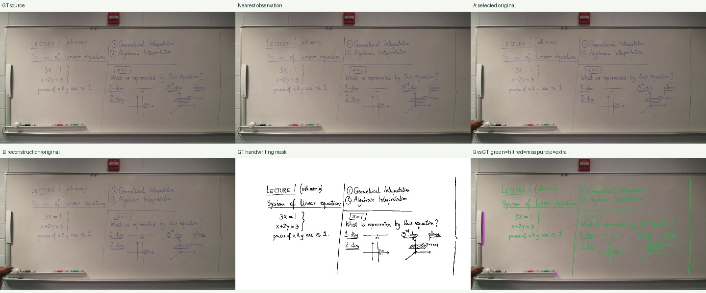
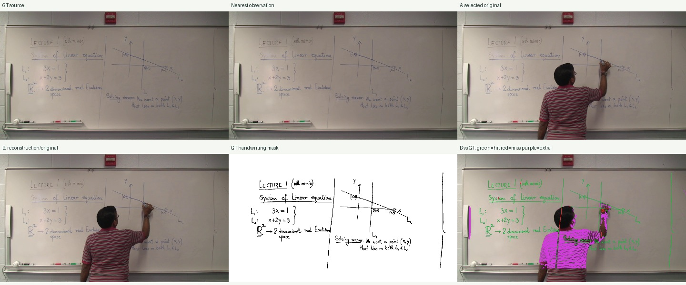
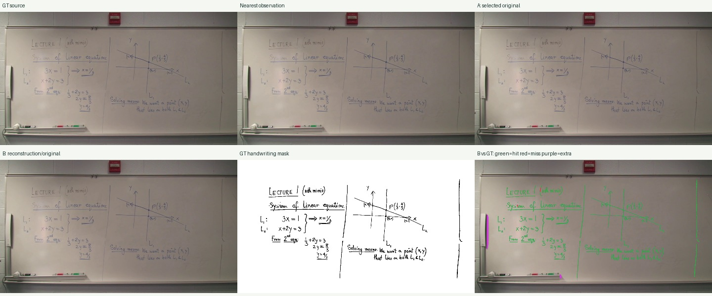

실제 가림 원본만 남긴 별도 스트레스 테스트입니다. 일반 앱의 A 선택 점수와 구분해야 합니다. 일부 GT 시점은 변경되지 않았으며 JSON의 occlusion_challenge_applied로 표시했습니다.
기존 알고리즘·기본 설정 고정. 학습 분할의 진단 실행이며 전체 데이터셋 또는 공식 unique-CC 벤치마크 점수가 아닙니다.
A/B는 각 정답 시각이 속한 상태의 결과를 선택합니다. 정답을 보고 가장 좋은 프레임을 고르지 않습니다. 세 가지 이진화 임계값과 GT 원본에 같은 이진화를 적용한 보정 결과를 report.json에 제공합니다.
전체 프로토콜·결과 JSON원본 1920×1080, 1046.08초 · 관측 2090개 · 상태 266개
| GT 시각 | 선택 시각 | B 상태 | A recall / precision | B recall / precision | GT 자체 recall |
|---|---|---|---|---|---|
| 347.78 | 342.84 | fallback | 0.996 / 0.950 | 0.996 / 0.950 | 0.995 |
| 607.67 | 596.10 | fallback | 0.966 / 0.379 | 0.966 / 0.379 | 0.995 |
| 730.53 | 731.23 | fallback | 0.995 / 0.942 | 0.995 / 0.942 | 0.996 |
표는 임계값 10. 붉은 정답 필기 누락과 보라색 추가 검출은 이진화 오차를 포함합니다. 원본 GT 자체의 회수율과 함께 해석해야 합니다.


